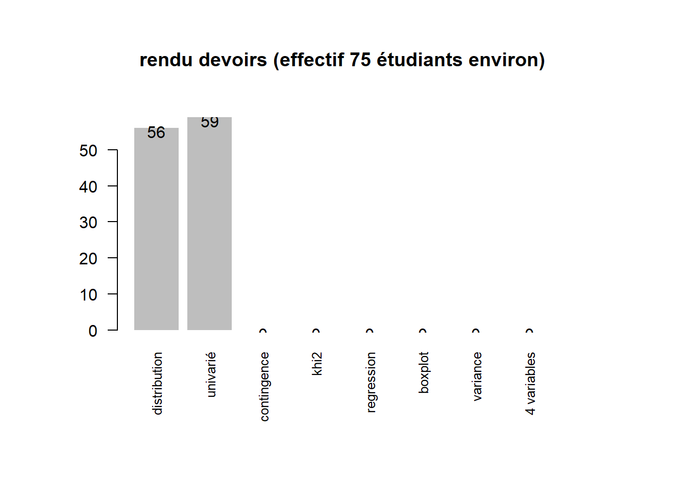

Introduction
1 Intitulé et déroulé du cours
“L5GEABIM Analyses bivariées et multivariées”
data <- read.csv("data/presentation.csv", encoding = "UTF-8", header = F)
knitr::kable(data, col.names = c("groupe", "heures", "enseignant") )| groupe | heures | enseignant |
|---|---|---|
| Gr. 1 | 8h - 9h30 | Béatrice MARANGET |
| Gr. 2 | 9h30 - 11h | Béatrice MARANGET |
| Gr. 3 | 14h - 15h30 | Béatrice MARANGET |
data <- read.csv("data/deroule2023.csv", encoding = "UTF-8")
knitr::kable(data)| Num.cours | date | thème | outil | exercice..nb.pts. |
|---|---|---|---|---|
| 1 | 18/09/23 | statistique univariée : base | tableur | 1 |
| 2 | 25/09/23 | statistique univariée : indicateurs | 2 | |
| 3 | 02/10/23 | bivariée : base + contingence | 2 | |
| 4 | 09/10/23 | Khi 2 | 2 | |
| 5 | 16/10/23 | régression | 2 | |
| 6 | 23/10/23 | devoir sur table | NA | |
| 7 | 30/10/23 | CONGES | NA | |
| 8 | 06/11/23 | initiation R | R | 1 |
| 9 | 13/11/23 | initiation R / variance | NA | |
| 10 | 20/11/23 | multivariée : choix des variables + sujet DM | NA | |
| 11 | 27/11/23 | multivariée : analyse factorielle et classification | NA | |
| 12 | 04/12/23 | questions autour du devoir maison. Devoir à rendre le 8 au plus tard. | NA | |
| 13 | 11/12/23 | rendu du devoir maison et bilan formation | NA |
2 La donnée
2.1 Où les trouver ?
Au départ les données sur les élections disponibles
https://www.data.gouv.fr/fr/pages/donnees-des-elections/
intérêt de la maille du bureau de vote
Chercher REU au niveau de la zone de recherche de data.gouv, quelles perspectives pour les chercheurs ?
2.2 Préparer les données
On utilise pour le cours le fichier par bureau de vote des présidentielles 2022
Cet exercice permet d’utiliser dans le tableur :
- l’ouverture d’un fichier txt pour le transformer en csv
- la suppression de colonne
- les 3 raccourcis clavier : CTRL + * , CTRL + C, CTRL + V
- Touche de sélection et de déplacement
- tri
- filtre
L’objectif est que chaque étudiant choisisse une ville (avec au moins 5 bureaux de vote)
Pour 2022, on rajoute les étiquettes des colonnes manquantes
data2022 <- read.csv2("data/gros/resultats-par-niveau-burvot-t1-france-entiere.csv", fileEncoding = "Latin1", header = T)
str(data2022)## 'data.frame': 69682 obs. of 105 variables:
## $ Code.du.département : chr "1" "1" "1" "1" ...
## $ Libellé.du.département : chr "Ain" "Ain" "Ain" "Ain" ...
## $ Code.de.la.circonscription : int 4 5 5 5 5 5 5 5 5 5 ...
## $ Libellé.de.la.circonscription: chr "4ème circonscription" "5ème circonscription" "5ème circonscription" "5ème circonscription" ...
## $ Code.de.la.commune : int 1 2 4 4 4 4 4 4 4 4 ...
## $ Libellé.de.la.commune : chr "L'Abergement-Clémenciat" "L'Abergement-de-Varey" "Ambérieu-en-Bugey" "Ambérieu-en-Bugey" ...
## $ Code.du.b.vote : chr "1" "1" "1" "2" ...
## $ Inscrits : int 645 213 1129 1128 1213 933 1047 1152 1034 1129 ...
## $ Abstentions : int 108 38 266 265 246 224 324 278 247 228 ...
## $ X..Abs.Ins : num 16.7 17.8 23.6 23.5 20.3 ...
## $ Votants : int 537 175 863 863 967 709 723 874 787 901 ...
## $ X..Vot.Ins : num 83.3 82.2 76.4 76.5 79.7 ...
## $ Blancs : int 16 3 18 15 10 8 11 8 9 9 ...
## $ X..Blancs.Ins : num 2.48 1.41 1.59 1.33 0.82 0.86 1.05 0.69 0.87 0.8 ...
## $ X..Blancs.Vot : num 2.98 1.71 2.09 1.74 1.03 1.13 1.52 0.92 1.14 1 ...
## $ Nuls : int 1 1 5 6 8 4 5 10 2 6 ...
## $ X..Nuls.Ins : num 0.16 0.47 0.44 0.53 0.66 0.43 0.48 0.87 0.19 0.53 ...
## $ X..Nuls.Vot : num 0.19 0.57 0.58 0.7 0.83 0.56 0.69 1.14 0.25 0.67 ...
## $ Exprimés : int 520 171 840 842 949 697 707 856 776 886 ...
## $ X..Exp.Ins : num 80.6 80.3 74.4 74.7 78.2 ...
## $ X..Exp.Vot : num 96.8 97.7 97.3 97.6 98.1 ...
## $ N.Panneau : int 1 1 1 1 1 1 1 1 1 1 ...
## $ Sexe : logi FALSE FALSE FALSE FALSE FALSE FALSE ...
## $ Nom : chr "ARTHAUD" "ARTHAUD" "ARTHAUD" "ARTHAUD" ...
## $ Prénom : chr "Nathalie" "Nathalie" "Nathalie" "Nathalie" ...
## $ Voix : int 3 2 4 6 8 4 7 4 3 2 ...
## $ X..Voix.Ins : num 0.47 0.94 0.35 0.53 0.66 0.43 0.67 0.35 0.29 0.18 ...
## $ X..Voix.Exp : num 0.58 1.17 0.48 0.71 0.84 0.57 0.99 0.47 0.39 0.23 ...
## $ N.Panneau.1 : int 2 2 2 2 2 2 2 2 2 2 ...
## $ Sexe.1 : chr "M" "M" "M" "M" ...
## $ Nom.1 : chr "ROUSSEL" "ROUSSEL" "ROUSSEL" "ROUSSEL" ...
## $ Prénom.1 : chr "Fabien" "Fabien" "Fabien" "Fabien" ...
## $ Voix.1 : int 6 7 30 13 18 21 22 24 22 23 ...
## $ X..Voix.Ins.1 : num 0.93 3.29 2.66 1.15 1.48 2.25 2.1 2.08 2.13 2.04 ...
## $ X..Voix.Exp.1 : num 1.15 4.09 3.57 1.54 1.9 3.01 3.11 2.8 2.84 2.6 ...
## $ N.Panneau.2 : int 3 3 3 3 3 3 3 3 3 3 ...
## $ Sexe.2 : chr "M" "M" "M" "M" ...
## $ Nom.2 : chr "MACRON" "MACRON" "MACRON" "MACRON" ...
## $ Prénom.2 : chr "Emmanuel" "Emmanuel" "Emmanuel" "Emmanuel" ...
## $ Voix.2 : int 150 50 159 201 229 156 132 175 189 212 ...
## $ X..Voix.Ins.2 : num 23.3 23.5 14.1 17.8 18.9 ...
## $ X..Voix.Exp.2 : num 28.9 29.2 18.9 23.9 24.1 ...
## $ N.Panneau.3 : int 4 4 4 4 4 4 4 4 4 4 ...
## $ Sexe.3 : chr "M" "M" "M" "M" ...
## $ Nom.3 : chr "LASSALLE" "LASSALLE" "LASSALLE" "LASSALLE" ...
## $ Prénom.3 : chr "Jean" "Jean" "Jean" "Jean" ...
## $ Voix.3 : int 18 10 24 19 28 16 19 20 19 32 ...
## $ X..Voix.Ins.3 : num 2.79 4.69 2.13 1.68 2.31 1.71 1.81 1.74 1.84 2.83 ...
## $ X..Voix.Exp.3 : num 3.46 5.85 2.86 2.26 2.95 2.3 2.69 2.34 2.45 3.61 ...
## $ N.Panneau.4 : int 5 5 5 5 5 5 5 5 5 5 ...
## $ Sexe.4 : logi FALSE FALSE FALSE FALSE FALSE FALSE ...
## $ Nom.4 : chr "LE PEN" "LE PEN" "LE PEN" "LE PEN" ...
## $ Prénom.4 : chr "Marine" "Marine" "Marine" "Marine" ...
## $ Voix.4 : int 149 23 237 210 227 172 178 207 188 227 ...
## $ X..Voix.Ins.4 : num 23.1 10.8 21 18.6 18.7 ...
## $ X..Voix.Exp.4 : num 28.6 13.4 28.2 24.9 23.9 ...
## $ N.Panneau.5 : int 6 6 6 6 6 6 6 6 6 6 ...
## $ Sexe.5 : chr "M" "M" "M" "M" ...
## $ Nom.5 : chr "ZEMMOUR" "ZEMMOUR" "ZEMMOUR" "ZEMMOUR" ...
## $ Prénom.5 : chr "Éric" "Éric" "Éric" "Éric" ...
## $ Voix.5 : int 43 14 69 68 74 40 46 67 74 92 ...
## $ X..Voix.Ins.5 : num 6.67 6.57 6.11 6.03 6.1 4.29 4.39 5.82 7.16 8.15 ...
## $ X..Voix.Exp.5 : num 8.27 8.19 8.21 8.08 7.8 ...
## $ N.Panneau.6 : int 7 7 7 7 7 7 7 7 7 7 ...
## $ Sexe.6 : chr "M" "M" "M" "M" ...
## $ Nom.6 : chr "MÉLENCHON" "MÉLENCHON" "MÉLENCHON" "MÉLENCHON" ...
## $ Prénom.6 : chr "Jean-Luc" "Jean-Luc" "Jean-Luc" "Jean-Luc" ...
## $ Voix.6 : int 66 41 216 194 227 202 226 210 159 170 ...
## $ X..Voix.Ins.6 : num 10.2 19.2 19.1 17.2 18.7 ...
## $ X..Voix.Exp.6 : num 12.7 24 25.7 23 23.9 ...
## $ N.Panneau.7 : int 8 8 8 8 8 8 8 8 8 8 ...
## $ Sexe.7 : logi FALSE FALSE FALSE FALSE FALSE FALSE ...
## $ Nom.7 : chr "HIDALGO" "HIDALGO" "HIDALGO" "HIDALGO" ...
## $ Prénom.7 : chr "Anne" "Anne" "Anne" "Anne" ...
## $ Voix.7 : int 5 3 15 19 16 8 6 18 10 20 ...
## $ X..Voix.Ins.7 : num 0.78 1.41 1.33 1.68 1.32 0.86 0.57 1.56 0.97 1.77 ...
## $ X..Voix.Exp.7 : num 0.96 1.75 1.79 2.26 1.69 1.15 0.85 2.1 1.29 2.26 ...
## $ N.Panneau.8 : int 9 9 9 9 9 9 9 9 9 9 ...
## $ Sexe.8 : chr "M" "M" "M" "M" ...
## $ Nom.8 : chr "JADOT" "JADOT" "JADOT" "JADOT" ...
## $ Prénom.8 : chr "Yannick" "Yannick" "Yannick" "Yannick" ...
## $ Voix.8 : int 30 10 25 46 65 15 24 51 33 28 ...
## $ X..Voix.Ins.8 : num 4.65 4.69 2.21 4.08 5.36 1.61 2.29 4.43 3.19 2.48 ...
## $ X..Voix.Exp.8 : num 5.77 5.85 2.98 5.46 6.85 2.15 3.39 5.96 4.25 3.16 ...
## $ N.Panneau.9 : int 10 10 10 10 10 10 10 10 10 10 ...
## $ Sexe.9 : logi FALSE FALSE FALSE FALSE FALSE FALSE ...
## $ Nom.9 : chr "PÉCRESSE" "PÉCRESSE" "PÉCRESSE" "PÉCRESSE" ...
## $ Prénom.9 : chr "Valérie" "Valérie" "Valérie" "Valérie" ...
## $ Voix.9 : int 26 8 40 42 35 33 23 43 45 48 ...
## $ X..Voix.Ins.9 : num 4.03 3.76 3.54 3.72 2.89 3.54 2.2 3.73 4.35 4.25 ...
## $ X..Voix.Exp.9 : num 5 4.68 4.76 4.99 3.69 4.73 3.25 5.02 5.8 5.42 ...
## $ N.Panneau.10 : int 11 11 11 11 11 11 11 11 11 11 ...
## $ Sexe.10 : chr "M" "M" "M" "M" ...
## $ Nom.10 : chr "POUTOU" "POUTOU" "POUTOU" "POUTOU" ...
## $ Prénom.10 : chr "Philippe" "Philippe" "Philippe" "Philippe" ...
## $ Voix.10 : int 3 3 8 4 3 4 8 8 5 3 ...
## $ X..Voix.Ins.10 : num 0.47 1.41 0.71 0.35 0.25 0.43 0.76 0.69 0.48 0.27 ...
## $ X..Voix.Exp.10 : num 0.58 1.75 0.95 0.48 0.32 0.57 1.13 0.93 0.64 0.34 ...
## $ N.Panneau.11 : int 12 12 12 12 12 12 12 12 12 12 ...
## [list output truncated]bondy2022 <- data2022 [ data2022$Libellé.de.la.commune == "Bondy",]
write.csv(bondy2022, "data/bondy2022.csv", fileEncoding = "UTF-8")
data2002 <- read.csv2("data/gros/PR02_BVot_T1T2.csv", fileEncoding= "Latin1",header=F,skip=18)
str(data2002)## 'data.frame': 1154537 obs. of 13 variables:
## $ V1 : int 1 1 1 1 1 1 1 1 1 1 ...
## $ V2 : chr "01" "01" "01" "01" ...
## $ V3 : int 1 1 1 1 1 1 1 1 1 1 ...
## $ V4 : chr "L'Abergement-Clémenciat" "L'Abergement-Clémenciat" "L'Abergement-Clémenciat" "L'Abergement-Clémenciat" ...
## $ V5 : chr "0001" "0001" "0001" "0001" ...
## $ V6 : int 563 563 563 563 563 563 563 563 563 563 ...
## $ V7 : int 442 442 442 442 442 442 442 442 442 442 ...
## $ V8 : int 427 427 427 427 427 427 427 427 427 427 ...
## $ V9 : int 2 3 4 5 6 7 8 9 10 11 ...
## $ V10: chr "LEPAGE" "GLUCKSTEIN" "BAYROU" "CHIRAC" ...
## $ V11: chr "CORINNE" "DANIEL" "FRANCOIS" "JACQUES" ...
## $ V12: chr "LEPA" "GLUC" "BAYR" "CHIR" ...
## $ V13: int 9 1 30 66 82 12 28 23 60 6 ...data2002 <- data2002 [, c(4,5,6:8,10,13)]
var <- c("ville","bv" ,"inscrits" ,"votants", "exprimes", "nom", "nb")
names(data2002) <- var
str(data2002)## 'data.frame': 1154537 obs. of 7 variables:
## $ ville : chr "L'Abergement-Clémenciat" "L'Abergement-Clémenciat" "L'Abergement-Clémenciat" "L'Abergement-Clémenciat" ...
## $ bv : chr "0001" "0001" "0001" "0001" ...
## $ inscrits: int 563 563 563 563 563 563 563 563 563 563 ...
## $ votants : int 442 442 442 442 442 442 442 442 442 442 ...
## $ exprimes: int 427 427 427 427 427 427 427 427 427 427 ...
## $ nom : chr "LEPAGE" "GLUCKSTEIN" "BAYROU" "CHIRAC" ...
## $ nb : int 9 1 30 66 82 12 28 23 60 6 ...bondy2002 <- data2002 [ data2002$ville == "Bondy",]
write.csv(bondy2002, "data/bondy2002.csv", fileEncoding = "UTF-8")3 Présentation rapide (vous êtes nombreux !)
3.1 Qui sont les étudiants ?
- 74 étudiants sur 3 cours
Les questions posées sont sur le passé / présent / futur des étudiants, leur appétence en stats et le nombre d’années depuis le dernier apprentissage.
etudiant <- read.csv("data/cours1.csv", fileEncoding = "UTF-8")
names(etudiant)## [1] "X"
## [2] "presence"
## [3] "prénom"
## [4] "nom"
## [5] "passé"
## [6] "présent"
## [7] "futur"
## [8] "appétence.stats..passionnément.4...pas.du.tout.1."
## [9] "dernière.année.apprentissage.stats..en.nb.années."
## [10] "groupe"names(etudiant)[8:9] <- c("appétence", "nb d'années")
png("img/quisontils.png")
par(mar = c(2,16,2,4))
par(mfrow = c(3,2))
for (i in 5:9){
par(mar = c(2,16,2,4))
barplot(sort(table(etudiant [,i])), border = NA,
horiz = T, las = 2, cex.names = 0.8,
main = names (etudiant) [i])
}
dev.off()## png
## 2
3.2 Présence et rendu des devoirs : chiffres clés
3.2.1 Effectif et cours
fic <- list.files("data/", pattern = "cours")
# on recherche le fichier le plus haut
nb <- max(as.integer(substring(fic, 6,7)))
tmp <- NULL
tab <- NULL
for (i in 1:nb) {
nomFic <- paste0("data/cours", i, ".csv")
data <- read.csv(nomFic, fileEncoding = "UTF-8")
data <- data [data [,2] == "oui",]
tmp <- table(data$groupe)
tab <- rbind(tab , tmp)
}
tab
row.names(tab) <- paste0("cours ",seq(1,nb, by = 1))
paste0("cours ",seq(1,nb, by = 1))
knitr::kable(tab)Graphique
barplot(tab, beside = T, main = "nombre d'étudiants par groupe et par cours", xlab = "groupe", ylab = "nb", col = terrain.colors(nb)
, border = NA, legend = F)3.2.2 Les rendus d’exercices
rendu <- c(56,0, 0, 0,0,0,0,0)
titre <- c("distribution", "univarié", "khi2", "khi2bis", "regression", "boxplot", "variance", "4 variables")
par(mar = c(8,6,6,6))
p <- barplot(rendu, names = titre, cex.names = 0.8, las = 2, main = "rendu devoirs (effectif 75 étudiants environ)", border = NA)
text(p, y = rendu - 1, labels = rendu )
3.2.2.1 Les notes des exercices
- Le critère externe : des points faciles ?
Au 3e devoir, sur 29 rendus, la moitié (15) ne mettent pas le bon nom, ni la bonne extension. Au 4e, sur 14, 10 ont utilisé bon nom et bonne extension.
- Distribution des totaux
devoir <- read.csv("data/notes.csv", fileEncoding = "UTF-8", dec=",", na.strings = '-')
res <- (apply(devoir [,2:5], 1, sum, na.rm = T))
resSansZero <- res [res !=0]
min(resSansZero)
densite <- density(res)
densite2 <- density(resSansZero)
hist(res, main = "Répartion du cumul des notes des 4 devoirs (max 17, 87 obs)",
xlab = "notes", ylab = "nb", freq = T,border = NA)
abline(v = mean(res), col = "red")
abline(v = median(res), col = "red", lty = 2)
hist(resSansZero, main = "Sans zéro (59 obs)", freq = T,border = NA,
xlab = "notes", ylab = "nb")
abline(v = mean(resSansZero), col = "red")
abline(v = median(resSansZero), col = "red", lty = 2)Beaucoup de notes très faibles, mais pas seulement.
3.3 Notes finales
note <- read.csv("data/noteFin.csv", fileEncoding = "UTF-8", na.strings = "en attente", dec = ",")
summary(note$note.sur.20)
hist(note$note.sur.20, main = "Etalement note finale - 95 obs", freq = T, border = NA)
resSansZero <- note [note$note.sur.20 !=0,]
abline(v = mean(note$note.sur.20, na.rm = T), col = "red")
mean(note$note.sur.20)
hist(resSansZero$note.sur.20, main = "Etalement note finale - 73 obs", freq = T, border = NA)
abline(v = mean(resSansZero$note.sur.20, na.rm = T), col = "red", lty = 2)4 Ressources autre que la bibliographie officielle
2 cours universitaires disponibles sur internet
- http://www.ipt.univ-paris8.fr/vgodard/enseigne/statisti/framstat.htm
- http://grasland.script.univ-paris-diderot.fr/STAT98/STAT98.htm
Pour R, la base de tout est
R et espace (https://archives.framabook.org/r-et-espace/index.html)